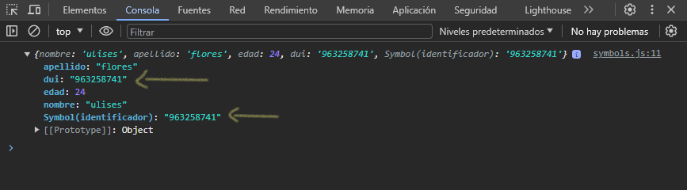
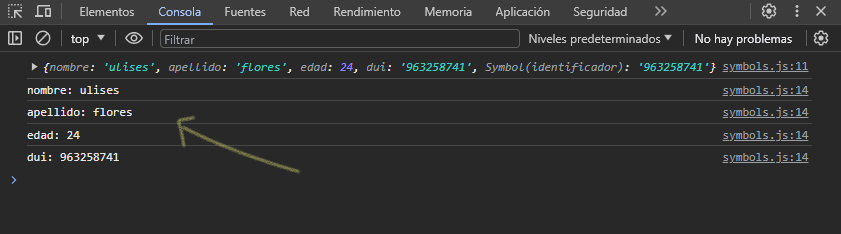
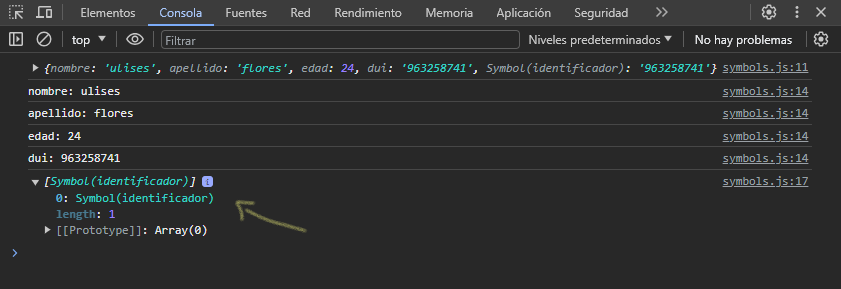

Creando un nuevo symbol primitivo
let dui = Symbol('identificador')
Para crear un nuevo symbol definimos una nombre a una variable y la igualamos con Symbol(), dentro de los paréntesis podemos definir un nombre descriptivo al symbol que hemos creado.
Los symbol son utilizados en objetos para propiedades que necesitemos ocultar su nombre, y a la vez evitar conflicto con otra propiedad del mismo nombre.
Veamos un ejemplo:
let datosPersona = {
[dui]: '963258741',
nombre: 'ulises',
apellido: 'flores',
edad: 24,
dui: '963258741'
}
console.log(datosPersona)
Analicemos el código, primero definimos nuestro symbol como propiedad privada y unica a las demás, creamos un objeto llamado "datosPersona" con algunas propiedades, para usar nuestro symbol creado anteriormente se colocan unos corchetes [] y dentro de ello colocamos el nombre que asignamos al symbol que creamos. Automáticamente el lenguaje ya entiende que dentro del objeto tendremos un symbol cuando colocamos los corchetes [].
Si observamos, en nuestro objeto tenemos un symbol que lo llamamos "dui", pues este symbol lo creamos porque necesitamos un identificador en nuestro objeto, pero a la vez, tenemos otra propiedad con el mismo nombre y el mismo valor, el cual necesitamos que ambos estén en el objeto, pero, que uno de ellos nos servirá como identificador.
Mostraremos en consola el objeto creado, y veamos que nos imprime:
Al ver el objeto en consola, vemos los nombres de cada propiedad del objeto, a excepción de uno, y ese es el symbol que hemos definido como identificador, fíjate como aparece el nombre descriptivo que le dimos al definir por primera vez, para eso nos sirve el nombre descriptivo, en caso que tengamos mas de un symbol.
Ahora bien, recorramos el objeto con un bucle for ... in
for(let prop in datosPersona) {
console.log(`${prop}: ${datosPersona[prop]}`)
}
Mostraremos el nombre de las propiedades y sus valores, y veamos el resultado:
Nos muestra las propiedades del objeto, a excepción de una, y esa es el symbol que habíamos definido al principio. Esto nos indica que la propiedad symbol esta oculta y privada, a esto se refiere cuando symbol es utilizada en propiedades de objetos que queramos hacer privada y únicas.
En caso que queramos listar o ver las propiedades privadas del objeto que hemos definido como symbol, se muestra con lo siguiente:
console.log(Object.getOwnPropertySymbols(datosPersona))
Pero solo nos muestra el nombre descriptivo del symbol que hallamos definido:
